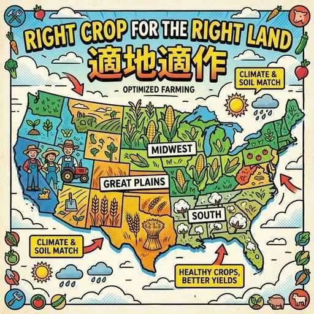
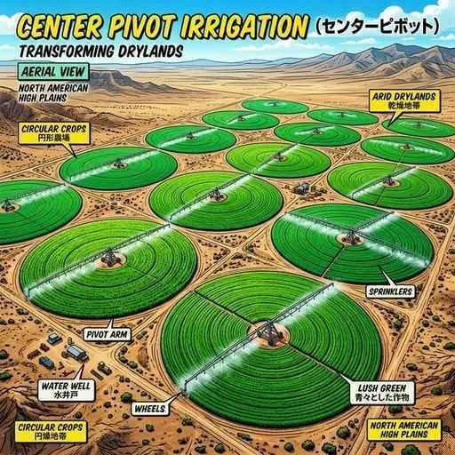

5. 北アメリカ州
北アメリカ州は、アメリカ合衆国を中心に世界トップクラスの経済規模を誇る地域です。自然環境に合わせて綿密に展開される大規模農業、最先端のハイテク産業、そして世界中から集まった多種多様な移民が構成する「多文化社会」の変遷など、入試に直結する重要テーマを整理して学びましょう！
1. 北アメリカの自然環境
北アメリカ大陸は、東部と西部で地形の様子が大きく異なり、これが農業や産業の分布に強い影響を与えています。

図1：降水量などの自然環境に合わせて、最適な作物を栽培する「適地適作」
- 西部のロッキー山脈：環太平洋造山帯の一部で、非常に高く険しい山々が南北に連なります。
- 東部のアパラチア山脈：浸食が進んでおり、比較的低くなだらかな山脈です。
- 中央平原と水系：中央部には大平原が広がり、メキシコ湾に注ぐ同国最長のミシシッピ川が流れます。また、カナダとの国境付近には、世界最大級の淡水湖群である「五大湖（ごだいこ）」があります。五大湖周辺やカナダ東部は寒冷な冷帯気候に属します。
- 気候の境界（重要！）：大陸の中央を走る西経100度の経線は、アメリカの農業において「降水量」の大きな境界線となっています。西経100度線より東側は温暖湿潤で農業に適し、西側は雨が極端に少なくなります。
- 自然災害：8月〜9月にかけて、メキシコ湾岸から東部を襲う巨大な熱帯低気圧「ハリケーン」が、しばしば大きな災害をもたらします。
2. 世界を圧倒するアメリカの「大規模農業」
アメリカは世界の食料庫とも呼ばれ、広大な土地をフル活用した効率的で大規模な農業を行っています。

図2：地下水を汲み上げてスプリンクラーで巨大な円を描くように散水する「センターピボット」
- 適地適作（てきちてきさく）：土地の気候や土壌といった自然条件に合わせて、最も栽培に適した作物を選んで集中的に生産する方法です。
- コーンベルト（五大湖の南〜西）：世界最大のトウモロコシや大豆の栽培地帯。
- グレートプレーンズ（ロッキーの東側）：乾燥平原で、牛などの放牧が盛んです。
- プレーリー（ミシシッピ川西側）：非常に肥沃な黒土（プレーリー土）が広がる、世界有数の小麦地帯。
- 南部地域：かつて黒人奴隷のプランテーションを利用して栽培した綿花（めんか）などの名残もありますが、現在は多様な農業が展開されています。
- センターピボット：降水量の少ない乾燥した西部地域などで、地下水を汲み上げ、自走式の大型スプリンクラーを用いて円形に散水する灌漑方法です。上空から見ると巨大なミステリーサークルのような形になります。
- フィードロット：肉牛を出荷前に狭い区画に集め、高カロリーな飼料を与えて急速に太らせる集中肥育施設です。
- アグリビジネスと穀物メジャー：農業を単なる耕作だけでなく、種苗や肥料の製造、農産物の加工、輸送、販売にいたるまで一体的に行う巨大な農業関連産業を「アグリビジネス」と呼びます。中でも、世界的な規模で穀物を取引する多国籍商社を「穀物メジャー」と呼びます。
3. アメリカの最先端工業と都市
かつての自動車産業から、現在のIT技術や宇宙開発にいたるまで、アメリカは常に技術革新をリードしています。
図3：世界中からIT系の人材と投資が集まる「シリコンバレー」
- サンベルトと産業の移動：かつては五大湖周辺のデトロイト（自動車産業）などの北東部が工業の中心でした。しかし、近年は温暖で土地が安く労働力を確保しやすい北緯37度以南の南部・西部地域「サンベルト」へと工場やハイテク産業が急速に移転しています。
- シリコンバレー：サンフランシスコ郊外にある、世界最大のICT（情報通信技術）関連企業が集中する一大拠点です。
- その他の先端産業：ヒューシュトンなどで盛んなロケットや宇宙探査のための航空宇宙産業（NASAの宇宙センターがあります）や、テキサスなどで開発が進む地下岩盤からの天然ガス「シェールガス」の開発などが活発です。
- 多国籍企業：自国だけでなく、世界中に拠点を置いて事業をグローバルに展開する企業です。
- 巨大都市の連結（メガロポリス）：東海岸のボストンからニューヨーク、標準時のある首都ワシントンD.C.にいたる、巨大都市が連続して繋がった地域をメガロポリスと呼びます。ニューヨークには金融の中心地であるウォール街があります。また、大量仕入れと安売りで小売りの仕組みを変えたチェーンストア（流通革命）もこの国で始まりました。
4. 「多文化社会」の変遷と周辺国
- 人種のるつぼからサラダボウルへ：世界中から移民が集まるアメリカは「移民の国」です。かつては様々な民族や文化が一つに溶け合う「人種のるつぼ」と言われましたが、現在はそれぞれの独自の文化やルーツを尊重し共生する「人種のサラダボウル」に例えられます。先住民族はネイティブ・アメリカンと呼ばれ、1960年代にはキング牧師が黒人らの人権を守る公民権運動を指導しました。
- ヒスパニックの急増：メキシコやカリブ海諸国などの近隣のスペイン語圏から移り住んだ移民である「ヒスパニック」が急増しており、人口に占める割合が大きくなっています。
- 食生活の普及：ハンバーガーなどを素早く提供する「ファストフード」は、アメリカの忙しい都市型生活から生まれ、今や世界中に普及しています。
- 周辺国の特徴：
- カナダ：英語とともにフランス語も公用語に指定されています。国旗には国の象徴であるカエデ（メープル）の葉が描かれています。
- メキシコ：公用語はスペイン語。アメリカ・カナダとの間で自由貿易を行うための新協定「USMCA（米国・メキシコ・カナダ協定）」を締結しています。アメリカ国境付近には、関税免除で組み立てを行うアメリカ企業の工場「マキラドーラ」が多くあります。
- キューバ：カリブ海に浮かぶ社会主義国。冷戦期に米ソの衝突寸前となった「キューバ危機」の舞台となりました。
🔥 定期テスト対策・暗記のコツ
① 西経100度線と適地適作（超最重要！）
「西経100度線」は降水量の境界です。これより東は「湿潤（雨が多い）」でトウモロコシや綿花を栽培し、西は「乾燥」するため小麦の栽培や牛の放牧を行います。この境界の意味をテストまでに必ず覚えておきましょう！
② 多文化社会の比喩表現
「かつて：人種のるつぼ（文化が溶けて混ざる）」➔「現在：人種のサラダボウル（それぞれの文化の形がそのまま残る）」の歴史的な変化を記述で比較させられることがあります。
③ 工業地域のシフト（サンベルト）
かつての「五大湖周辺のデトロイト（自動車など）」から、現在の「北緯37度以南のサンベルト（IT・先端）」への工業の移動は非常によく狙われます！